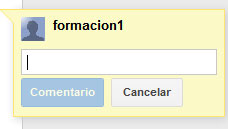

Los comentarios son una forma práctica de añadir notas al texto normal del documento. Son visibles para lectores y colaboradores. Son muy útiles en trabajo colaborativo, ya que los colaboradores pueden comunicarse entre sí creando notas sobre los cambios que ha hecho o tiene que hacer cada uno.
Para añadir un comentario a un documento, colocaremos el cursor donde queramos que aparezca o bien destacaremos el texto en cuestión. A continuación, en el menú Insertar, seleccionamos Comentar.
Escribimos el comentario en el cuadro que aparece a la derecha del documento. Nuestro nombre de usuario aparece en el comentario de forma predeterminada.
Si pinchamos en el botón Comentario podemos modificar o eliminar un comentario insertado anteriormente, responder al comentario con una nueva publicación y resolver el debate cuando queramos suprimirlo del documento.
Cada comentario lleva asociada la foto de nuestro perfil.

Si publicamos el documento como una página web o lo imprimimos, los comentarios desaparecen.